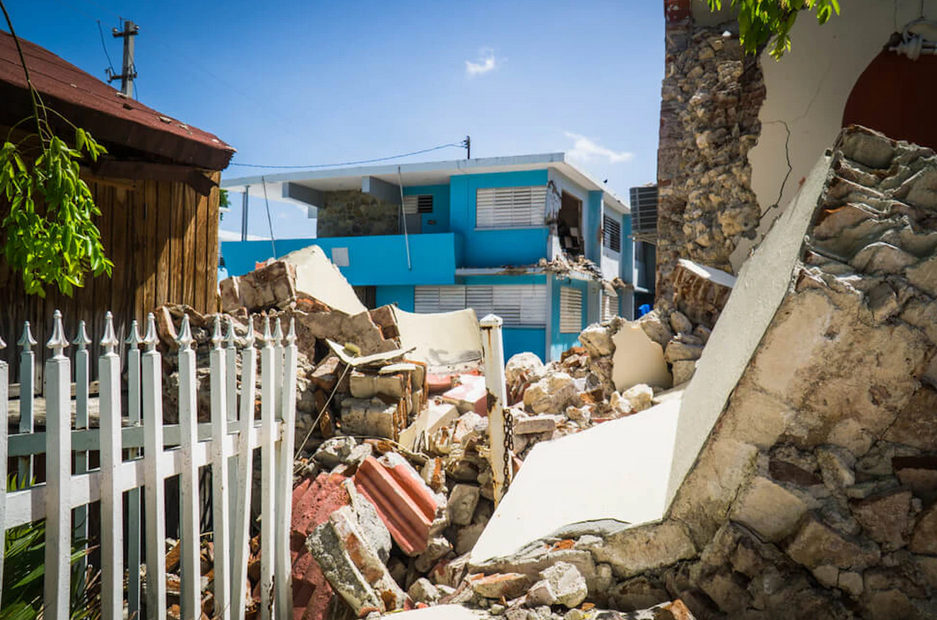

Um Terremoto Devastador Abala o Caribe
Data: 15 de Janeiro de 2020
Localização: Região do Caribe
Descrição: No dia 15 de janeiro de 2020, a região do Caribe foi abalada por um poderoso terremoto de magnitude 7.0 na escala Richter. O epicentro do terremoto foi registrado próximo a Porto Príncipe, Haiti, e os tremores foram sentidos em várias ilhas do Caribe.
Os impactos do terremoto foram devastadores. Prédios desabaram, estradas ficaram bloqueadas e houve relatos de danos generalizados em áreas residenciais. O evento deixou um rastro de destruição e causou grande preocupação entre os residentes locais.
As autoridades locais e organizações de ajuda humanitária responderam rapidamente à crise, mobilizando esforços de busca e resgate, bem como fornecimento de assistência médica e suprimentos essenciais. A solidariedade internacional também se fez presente, com países vizinhos e organizações internacionais oferecendo ajuda e recursos para ajudar a região a se recuperar.
A tragédia serviu como um lembrete da importância da preparação para desastres naturais em áreas propensas a terremotos. As comunidades locais estão trabalhando para se reconstruir e fortalecer suas infraestruturas para lidar com futuros eventos sísmicos.